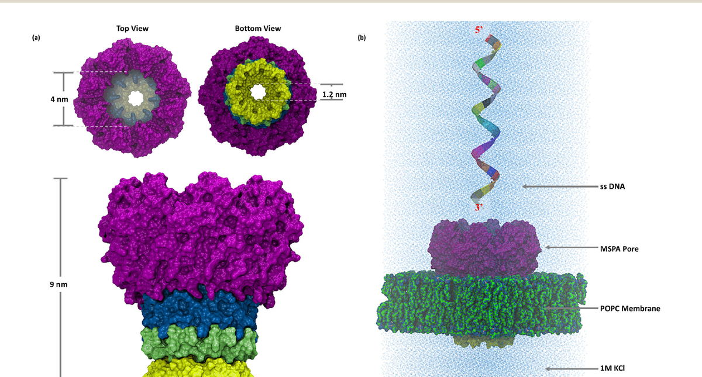
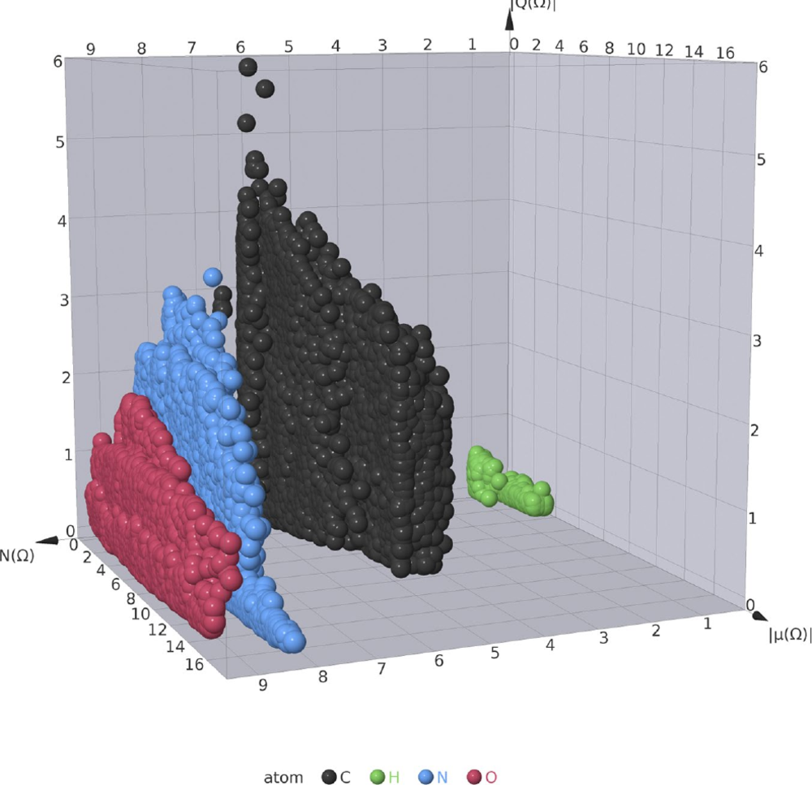
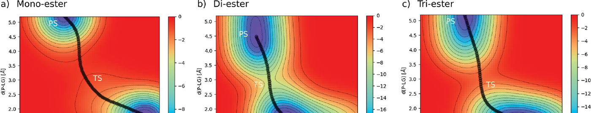
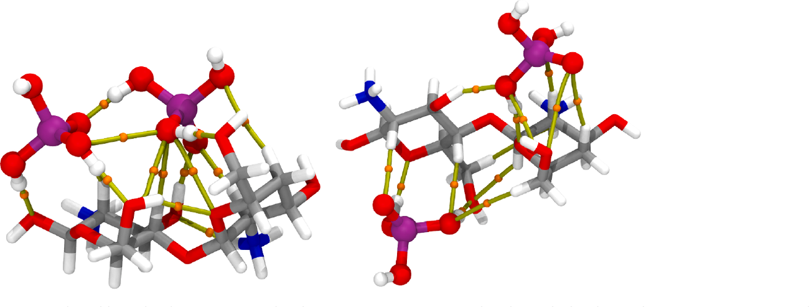

I'm a computational chemist. I use simulation to see how molecules behave, and data-driven analysis to explain why.
That pairing — behaviour plus explanation — is what turns a result into something worth building on. I apply it across several areas:
Trained in Mexico, Switzerland, and Japan, I now lead this research independently at Kyoto University.



My research is built across borders and across the theory–experiment divide: active collaborations span five regions, and most of my projects are joint with experimental groups.
Datasets: AIMEl-DB — Atomic Properties for 38K small organic molecules (Zenodo, 2024). Full list on researchmap · ORCID · Google Scholar.
Peer reviewer for ACS Biomaterials Science & Engineering and Digital Discovery. University-level teaching in atomic & molecular structure, classical mechanics, and general chemistry (2017–2024).
Open to collaborations in molecular simulation, interpretable AI for chemistry and materials, and sustainable separation.